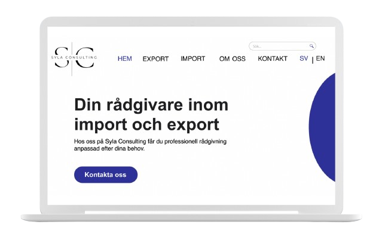

Prototypes
KlimatKoll Prototype
A high-fidelity prototype for the KlimatKoll app, designed for workshops aimed at educating the elderly population about climate change and sustainability. The app features an intuitive interface with accessible navigation, ensuring that users of all ages can easily engage with the content. Key functionalities include personalized carbon footprint tracking, interactive learning modules, and actionable tips for reducing environmental impact. The design focuses on clarity and simplicity, with large fonts and easy-to-understand visuals to accommodate users with varying levels of digital literacy. The goal is to create an engaging, educational experience that empowers older adults to contribute to a more sustainable future.
See KlimatKoll prototype in Figma
Syla Consulting Prototype
This high-fidelity prototype for Syla Consulting was created in Adobe XD to showcase a sleek and professional website design aimed at presenting the company’s consulting services with clarity and impact. The prototype features a clean, minimalist layout that prioritizes user-friendly navigation and intuitive flow, ensuring visitors can easily explore service offerings, client testimonials, and contact information. Key sections include a dynamic homepage with strong visual branding, a service overview, and an interactive contact form. The design emphasizes professionalism and trust, aligning with Syla Consulting’s brand identity, while also being optimized for both desktop and mobile experiences.
See Syla Consulting prototype in Adobe XD
Fashion store prototype in Figma
A high-fidelity prototype designed for a fashion store app, created to provide a smooth and engaging shopping experience. With a clean, modern interface and stylish design elements, the app is optimized to enhance user engagement. The focus is on creating an elegant and user-friendly experience that reflects the brand's fashion-forward identity.
See Fashion store prototype in FigmaRetreat hotel prototype in Figma
A high-fidelity prototype for a luxury Retreat hotel, designed in Figma. This prototype is centered around providing a seamless and intuitive user experience, featuring clean layouts, modern typography, and visually appealing design elements. Key functionalities include room booking, with a focus on enhancing the user journey and optimizing conversion rates. The design reflects a calm and luxurious atmosphere, perfectly aligning with the brand identity of the retreat.
See Retreat hotel prototype in Figma